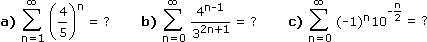
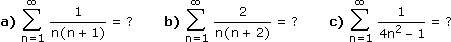
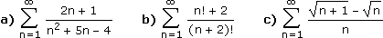
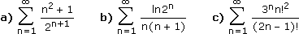
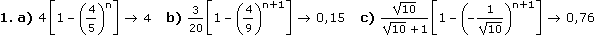
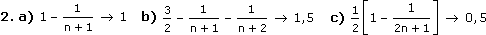
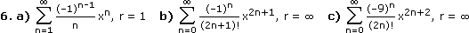
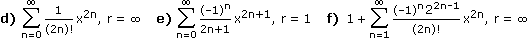

Reihen - Aufgaben 1
1.
Schreibe sn (mittels geometrischer Summenformel) als Term in n und bilde den Grenzwert:

2.
Schreibe sn (mittels Partialbruchzerlegung) als Term in n und bilde den Grenzwert:

3.
Bestimme das Konvergenzverhalten durch Vergleich mit einer geeigneten p-Reihe:

Bestimme das Konvergenzverhalten über das Quotientenkriterium (sofern möglich):

5.
Approximiere f(x) an der Stelle 0 durch das 2-te Taylorpolynom:
a) f(x) = e
2xcos
2x
b) f(x) = x –
3√1 + x
c) f(x) =
Entwickle f(x) an der Stelle 0 in eine Taylorreihe und bestimme den Konvergenzradius:
a) f(x) = ln(1 + x)
b) f(x) = sinx
c) f(x) = x
2cos3x
d) f(x) =
e) f(x) = atanx
f) f(x) = cos
2x
Ergebnisse:


3. a) divergent b) konvergent c) konvergent
4. a) konvergent b) nicht möglich
c) konvergent
5. a) 1 + 2x + x2
b) –1 + 2x/3 + x2/9
c) 2x2

